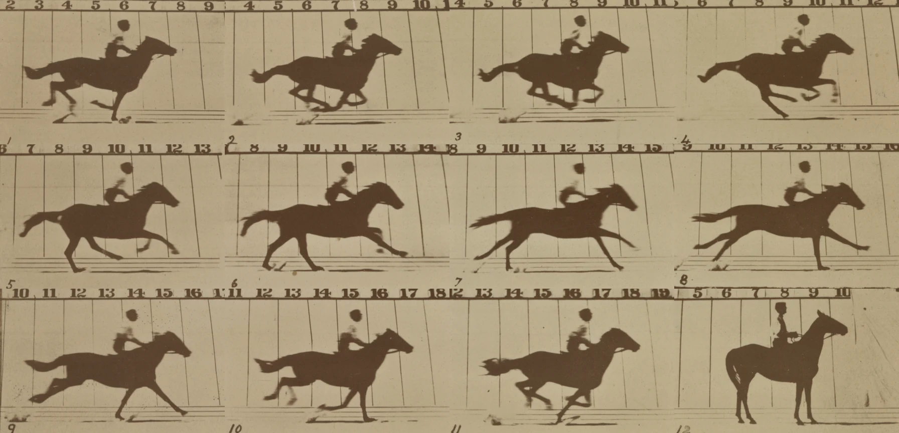

Mutoscope
Turn the crank to bring Eadweard Muybridge’s 1878 photographs of Sallie Gardner into motion.

The Horse in MotionCARD 01 / 11
Drag the handle around the wheel. Use the left and right arrow keys to step through the cards.
The photograph could not be loaded. Open the original print below.
This viewer adapts the hand-cranked card drum of a mutoscope. Muybridge’s print has eleven gallop photographs and a twelfth standing pose, shown separately here. Original print, Library of Congress · Mutoscope in the ACMI collection